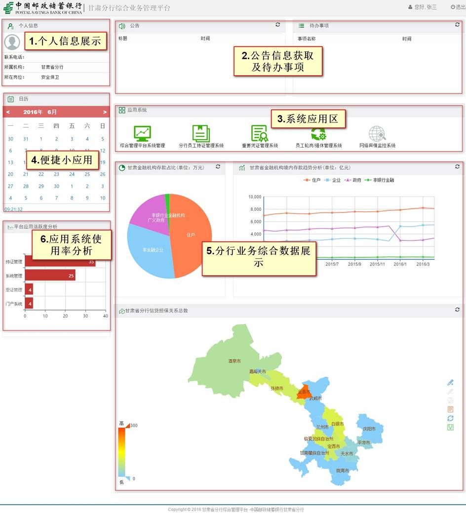

甘肃省分行
甘肃分行综合业务管理平台
操作手册
杭州米阳科技有限公司
2016年6月
目录
本操作手册为甘肃省邮政储蓄银行综合业务管理平台操作手册。编写本操作手册的目的是充分叙述本软件所能实现的功能及其使用方式，以便使用者了解本软件的使用范围和使用方法，并为软件的维护和更新提供必要的信息。
全行员工
支持win xp、win7、win10。
支持谷歌浏览器、火狐浏览器、360浏览器、IE浏览器（最低版本IE8）等。
输入地址时请注意大小写。
用户登录后，系统将根据当前用户是否有权限使用（进入）各个系统。允许使用（进入）的显示为绿色，不允许使用（进入）的显示为灰色。点击绿色应用系统，则会跳进入该系统。
在浏览器地址中，输入
http://10.249.240.11:8800/GPIPortal，进入综合业务门户系统。
登录账号为：个人身份证号（字母‘X’必须为大写），初始密码默认为：123456

显示当前集成在综合业务管理平台的系统应用。显示状态有两种，绿色和灰色。绿色表示当前登录的用户有权限使用（进入）该系统，灰色表示无权限使用（进入）该系统。点击绿色系统图标进入该系统，反之则无法进入。
分别用不同展示方式，折现图，饼状图和甘肃省地图展示了分行综合业务数据。